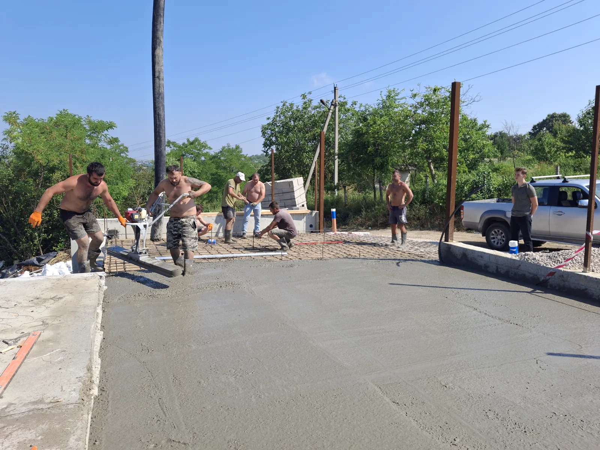
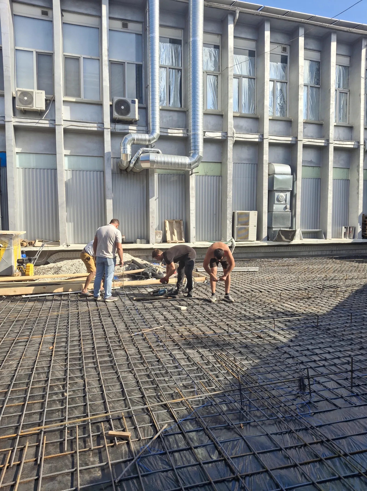

Ne spui ce ai nevoie
Alegi serviciul și ne lași un număr de telefon.

Turnări de beton pentru suprafețe rezidențiale, comerciale și industriale. Stabilim soluția după utilizarea spațiului și condițiile din teren.
Etape și detalii din lucrările Condr Grup.

Alegi serviciul și ne lași un număr de telefon.
Clarificăm locația, cantitățile și accesul.
Definim scopul, etapele și responsabilitățile.
Organizăm echipa după planul convenit.
După tipul lucrării, cantități, acces, materiale și condițiile reale din teren. Clarificăm aceste detalii înainte de ofertare.
Da. Trimite informațiile pe care le ai. Stabilim împreună ce mai este necesar pentru evaluare.
Da. Adaptăm scopul lucrărilor pentru proprietari, companii și antreprenori.
Alege serviciul. Noi te ajutăm cu următorul pas.
Lasă-ne numele și telefonul. Revenim pentru detalii.